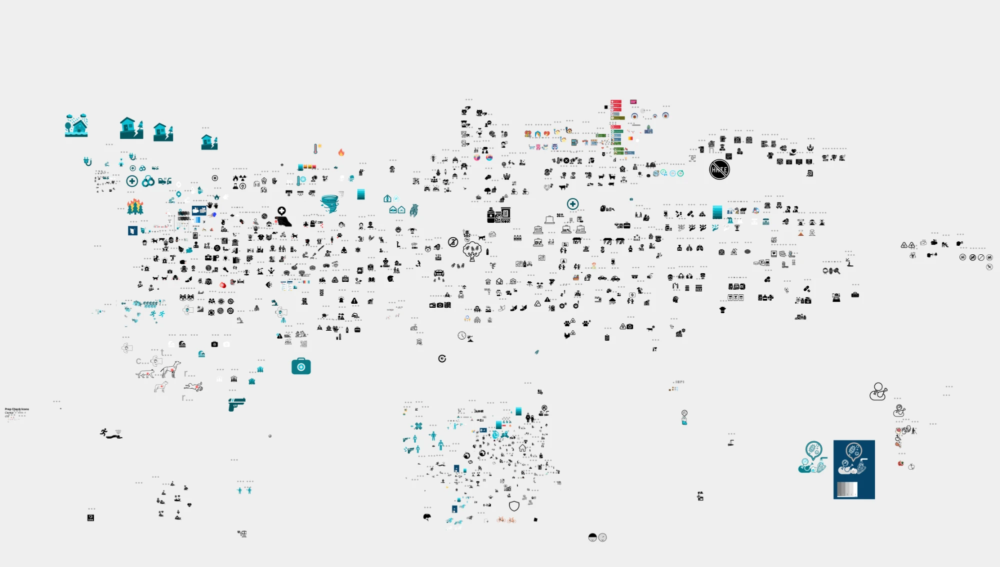
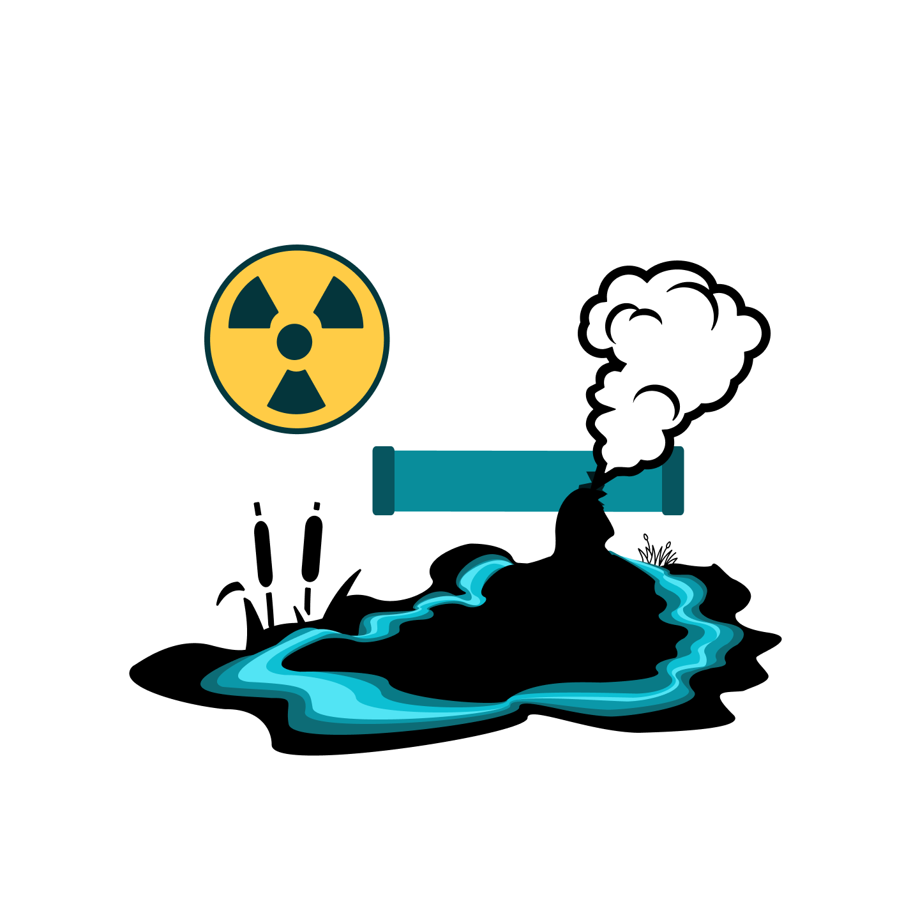
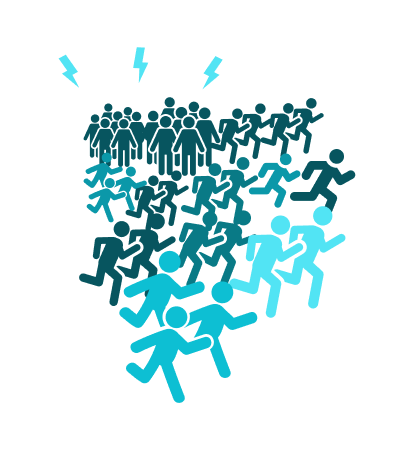
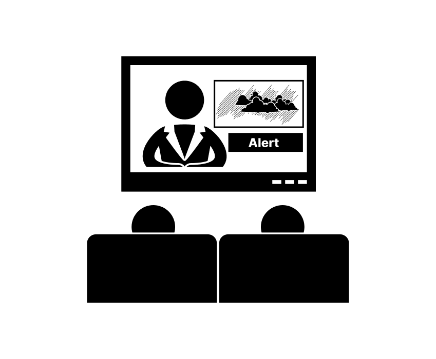
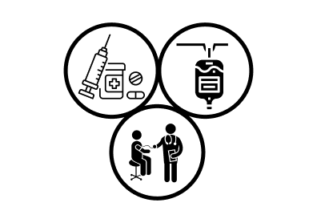
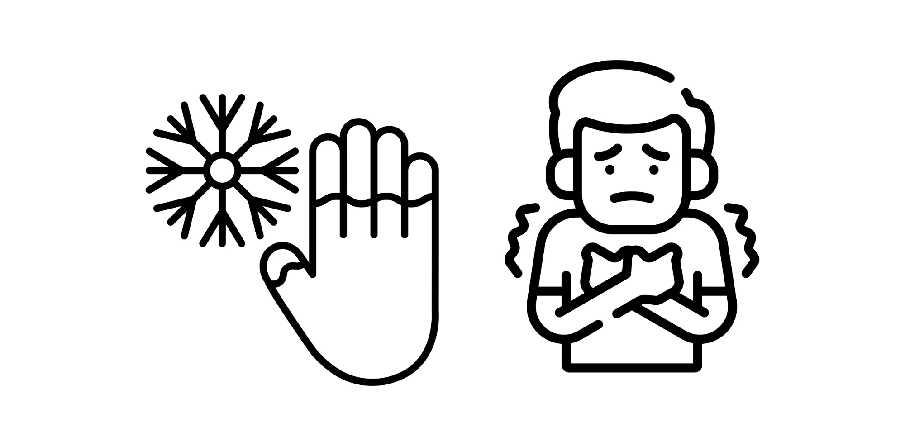
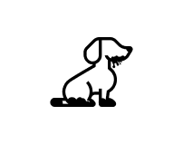
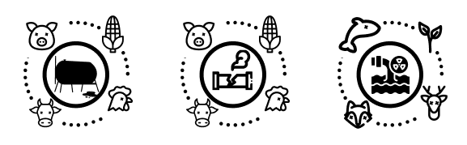
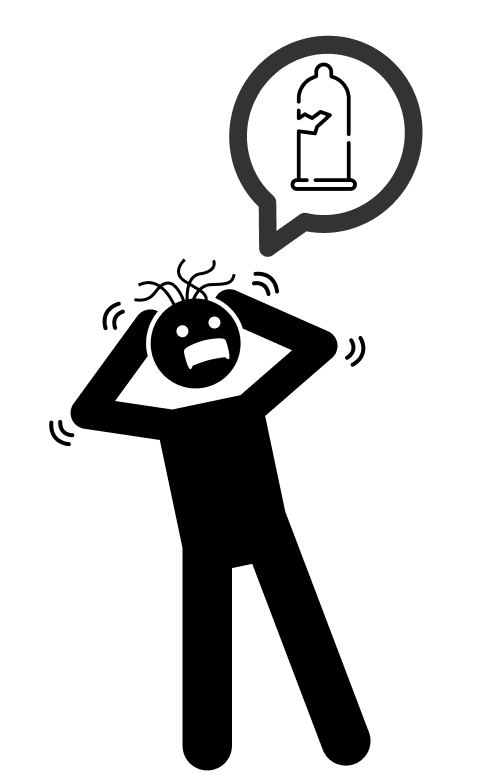

01Overview
How do you design an icon for something potentially traumatic?
That was one of the more interesting challenges I encountered while working on iconography at HazAdapt.
HazAdapt develops technology focused on emergency preparedness, public safety, and helping people understand the hazards that might affect them. Naturally, that means dealing with some pretty unpleasant subjects.
Violence, natural disasters, medical emergencies, and other potentially traumatic situations aren't exactly the easiest things to turn into a collection of tiny pictures.
And that's where things got interesting.
I needed to create iconography that communicated hazards clearly while being mindful of the people who would encounter those images, including people who may have personally experienced the situations being represented.
This wasn't just an exercise in making everything look consistent. It was about making intentional visual decisions, understanding their potential impact, and recognizing that sometimes the most obvious representation isn't the most appropriate one.

02The Problem
Just because something is recognizable doesn't mean it's appropriate
Icons are supposed to make information easier to understand. They're visual shortcuts that help people identify something without having to read an entire explanation.
But what happens when the thing you're trying to represent is inherently distressing?
There are plenty of ways to illustrate a violent incident, an injury, or a dangerous situation. Some are immediately recognizable because they're literal. Others rely on symbolism or familiar visual cues.
The problem is that literal imagery isn't always the best choice, particularly when the audience might include someone who has experienced that exact situation.
At the same time, making an icon too abstract creates another problem. If someone can't figure out what they're looking at, the icon isn't doing its job.
So I was working within a pretty specific set of constraints. The icons needed to be recognizable, consistent, accessible, and appropriate for a public-facing safety platform. And they needed to communicate serious information without using shock value to get the point across.
The question became: How much visual information is necessary to communicate a hazard, and when does that information become unnecessary distress?
03My Approach
Trauma-informed design wasn't an afterthought
One of the most important considerations throughout this work was trauma-informed design.
People don't arrive at an interface without context. They bring their experiences with them, and those experiences can influence how they interpret the things we put in front of them. An image that seems harmless or straightforward to one person might be deeply uncomfortable for someone else.
That doesn't mean we can anticipate every possible emotional response. We can't. But we can make thoughtful decisions about the imagery we use, question whether certain details are necessary, and avoid introducing distress simply because a more graphic illustration might be easier to recognize.
For me, that meant considering a few things throughout the design process:
- Recognition: Could someone understand the hazard without needing an explanation of the illustration?
- Emotional impact: Was the imagery more graphic or distressing than it needed to be?
- Context: Would the icon make sense alongside its label and the surrounding information?
- Accessibility: Could the icon remain understandable at smaller sizes, with sufficient contrast and supporting text?
- Consistency: Did the icon belong to the same visual system as the others without losing what made the hazard recognizable?
The goal wasn't to make serious situations look harmless. It was to communicate them responsibly.



04Literal vs. Symbolic
Sometimes less really is more
One of the biggest considerations when designing hazard icons is deciding how literally something needs to be represented. Some hazards have established visual conventions. Others are more difficult to communicate without depicting the event itself.
There's a difference between illustrating the concept of danger and illustrating someone actively experiencing harm. That distinction became an important part of how I evaluated the imagery.
Could an object, environmental cue, or recognizable symbol communicate the same information without showing the most distressing aspect of the situation? Would simplifying the illustration make it easier to understand, or would it remove too much context?
Those were the kinds of questions I wanted to answer through the design decisions. It wasn't about removing detail indiscriminately. It was about deciding which details were actually doing something useful.
05Icon Study 01
STI Treatment and Symptom Management
- What needed to be communicated
- Treatment and symptom management for sexually transmitted infections (STIs), emphasizing medical care without stigma or judgment.
- What I explored
- Familiar medical imagery, including medication, injections, IV treatment, and interactions with healthcare professionals.
- What I changed
- Simplified the illustrations to focus on recognizable treatment methods rather than explicit symptoms or potentially distressing imagery.
- Why
- Sexual health can be a sensitive subject. Focusing on care rather than the condition itself reduces stigma while keeping the imagery approachable, accessible, and easy to recognize.

06Icon Study 02
Frostbite and Hypothermia
- What needed to be communicated
- The physical effects of extreme cold, distinguishing localized frostbite from whole-body hypothermia.
- What I explored
- A hand paired with a snowflake to represent frostbite and a shivering figure to communicate hypothermia without graphic imagery.
- What I changed
- Simplified the illustrations to focus on recognizable symptoms, using minimal details, bold outlines, and clear physical cues.
- Why
- Cold-related injuries are serious, but the imagery doesn't need to be frightening. Familiar visual cues make these hazards easier to recognize while maintaining emotional sensitivity and accessibility.

07Icon Study 03
Signs of Exposure to Oil Pipeline Leaks in Pets
- What needed to be communicated
- The potential effects of oil pipeline leaks on pets, helping users recognize that animals may be exposed to hazardous substances.
- What I explored
- A simple animal silhouette with visual indicators of contamination, avoiding graphic depictions of illness or injury.
- What I changed
- Kept the dog's form recognizable while limiting the details to a small area of dark material beneath its body.
- Why
- Pet safety can be an emotionally sensitive topic. Using familiar animal imagery communicates the hazard without depicting animal suffering, keeping the illustration approachable and accessible.

08A Consistent Visual Language
They still needed to look like they belonged together
Beyond the individual hazards, I had to consider how the icons worked as a collection. An icon might make perfect sense on its own and still look completely out of place alongside the rest of the set.
Differences in line weight, detail, proportions, and visual complexity can create inconsistencies that make an interface harder to scan. I wanted the collection to feel cohesive, but I didn't want consistency to become an excuse to force every hazard into the same visual treatment. Some concepts naturally require more detail than others.
The challenge was finding enough commonality to establish a recognizable visual language without compromising the meaning of the individual icons. And because the icons were part of a larger product experience, they also needed to work alongside typography, interface components, and supporting information.
The icon was never supposed to do all the communicating by itself.

09Accessibility
More than making something legible
Trauma-informed design and accessibility have a lot in common, but they aren't the same thing. An icon can be perfectly legible and still be unnecessarily distressing. It can also be emotionally considerate and completely incomprehensible. Neither outcome is particularly useful.
The iconography needed to support the larger experience rather than introduce another barrier. That meant considering how icons would be presented with labels, how well they held up at smaller sizes, and whether the surrounding interface provided enough context for people to understand what they were looking at.
I also wanted to avoid treating an icon as a universal language. Visual symbols are interpreted through experience, culture, and familiarity. Something that seems obvious to the person designing it isn't necessarily obvious to everyone else. That's another reason supporting text matters.
The goal was never to make people guess correctly. It was to make the information easier to understand.
10The Ones That Didn't Make the Cut
Because apparently I can't take everything seriously
Working on icons for emergency preparedness means spending a lot of time thinking about some pretty heavy subjects. And while trauma-informed design was always an important part of the work, I'd be lying if I said I wasn't occasionally tempted to take things in a completely different direction.
Sometimes an idea is funny enough that you just have to make it, even when you know there's absolutely no chance it's going into the final product.
Enter the broken condom icon.
Was it funny? Absolutely. Was it appropriate for a public-facing safety platform communicating potentially sensitive information to a broad audience? Yeah, probably not. But that's part of the creative process, too.
Not every idea needs to survive. Sometimes you make something ridiculous because it makes you laugh, because you're exploring a visual concept, or because you've been staring at hazard icons for entirely too long.
The important part is knowing the difference between something that's entertaining to make and something that's appropriate to put in front of the people using your product. Humor can absolutely have a place in design. But context matters, especially when the subject involves someone's health, safety, or potentially traumatic experiences.
The broken condom didn't make the cut. It did, however, earn a permanent place in my collection of things I probably shouldn't have made but absolutely don't regret making.

11Bringing the Icons Into the Product
The icons weren't meant to exist as a standalone collection
They were part of a broader product experience designed to help people identify and understand hazards. That meant thinking about where the icons appeared, what information accompanied them, and how they supported the overall interface.
An icon that looks great at full size in a design file might become difficult to interpret when it's placed inside a compact interface component. Likewise, an icon that seems self-explanatory in a complete grid might need additional context when it appears on its own.
The final artwork needed to work within those practical constraints.
This is also where the design decisions became more than an exercise in visual style. The icons had a job to do. They needed to help communicate information about hazards in a way that was understandable, consistent, and considerate of the people using the product.
12The Outcome
The thinking behind the collection
The work resulted in a collection of hazard icons designed around a common visual language and an intentional approach to potentially sensitive subject matter. But the most important part of the project wasn't the collection itself. It was the thinking behind it.
Every icon presented an opportunity to question what information was necessary, how it could be communicated, and whether the most obvious visual solution was actually the right one. The finished collection reflects those considerations, balancing recognizable hazard imagery with the broader responsibilities of designing for public safety.
13What I Took Away
They're just little pictures, right?
It's easy to dismiss iconography as a small part of interface design. Except those little pictures can represent things that have profoundly affected someone's life.
And when you're designing for emergency preparedness, you have to consider that the person viewing an icon might not be encountering that hazard as an abstract concept. They might have lived through it.
This project reinforced the importance of questioning visual decisions that might otherwise seem obvious. Just because an image communicates something doesn't mean it's the best way to communicate it. Just because something is recognizable doesn't mean it's appropriate. And just because you're dealing with serious subject matter doesn't mean you can't have a little fun during the creative process.
You just have to know which ideas belong in the product and which ones belong in a folder labeled absolutely not.
The broken condom is staying in that folder.
Probably.